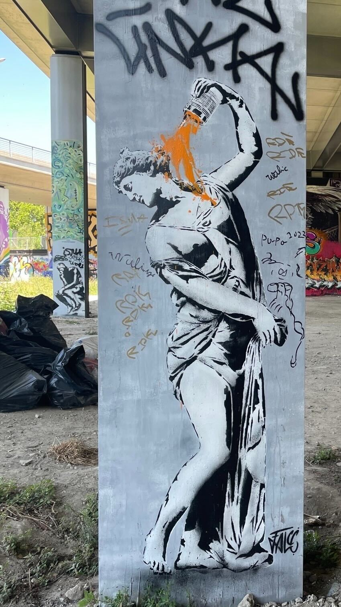

/ Le Street Art à Paris /

Le street-art continue de tisser sa toile dans le 13e arrondissement de Paris pour notre plus grand bonheur.
Niché juste en dessous de la galerie Lavo//matik, Spot 13 est LE lieu éphémère en plein air dédié à l’art urbain à découvrir de toute urgence.
Incroyable terrain d’expression à ciel ouvert, Spot 13 convie régulièrement des street-artistes à venir déposer leur empreinte artistique pour une immersion atypique garantie.
Pour admirer le street-art à Paris, les inconditionnels d’art urbain savent parfaitement que le 13e arrondissement
est l’endroit idéal pour en prendre plein les yeux. C’est justement ici, dans ce vaste quartier du sud-est parisien que Spot 13 a jeté son dévolu en 2017.
Depuis, ce lieu éphémère en plein air dédié au street-art a vu défiler un grand nombre d’artistes et le bouche-à-oreille a fait le reste.
Aujourd’hui, Spot 13 attire les férus de street-art, mais pas que… de nombreux curieux, jeunes et moins jeunes, font aussi le déplacement pour découvrir cette immense galerie à ciel ouvert
où les fresques réalisées à la bombe, au pinceau ou encore au pochoir dynamisent le quartier.
Derrière ce lieu éphémère et privé, mais accessible gratuitement aux visiteurs, on retrouve l’association Spot 13.
Officiellement créée en mars 2021, l'association veut proposer une aventure à la fois artistique et humaine.
Car il n’est pas rare de tomber nez à nez sur les artistes en plein travail, bombe à la main, donnant ainsi lieu à de beaux échanges entre ces derniers et les visiteurs.
Concrètement, Spot 13 dévoile deux grands espaces, le coin underground où les œuvres s’exposent sur de gigantesques murs des terrains vagues, et la partie figurative,
à admirer dans quatre salles, réparties sous les rails du tram T3a.Chez Spot 13, les fresques des artistes changent régulièrement, voire très régulièrement.
Certaines d’entre elles disparaissent au bout de 10 jours, laissant place à un nouvel artiste et une nouvelle œuvre.
D’autres, comme les fresques les plus imposantes, peuvent en revanche être admirées pendant plusieurs semaines.
C’est tout le concept de Spot 13 qui veut faire vivre ce lieu unique en permettant aux artistes urbains d’investir ce terrain de jeu à ciel ouvert plutôt que de le faire dans une galerie ou un musée.


Certains street-artistes sont directement invités par Spot 13, tandis que d'autres peuvent faire leur demande pour venir graffer auprès de l’association.
Si la plupart sont franciliens, quelques-uns viennent de province, voire même de l’étranger comme la Russe Anna Conda. Ce jour-là, on a également pu admirer
des fresques signées Msieubonheur, Elgee, Andrew Wallas, Move, les deux frères de Ensemble réel, Petri, PESCA 2AC, Djalouz, dirtysix6, ou encore S7T RBZ.
La salle dédiée aux pochoiristes mérite elle aussi le détour avec par exemple un magnifique portrait d’Angela Davis signé Raf Urban, mais aussi des pochoirs de SE BD, KRISTX, Fred Zag…
Et pour les jeunes artistes en herbe, Spot 13 propose certains samedis des « painting sessions » pour initier les plus jeunes à l’art urbain.
Autre bonne nouvelle ? Tous les jours, une personne de l’association est présente sur place pour vous raconter l’histoire de cet incroyable lieu et les œuvres qui le composent.
SPOT 13, 47 allée Paris Ivry 75013 - M° : Bibliothèque François Mitterand
Du mardi au dimanche de 11h à 18h - sans réservation
Tél : 07 49 56 96 56
Email spot13paris@gmail.com